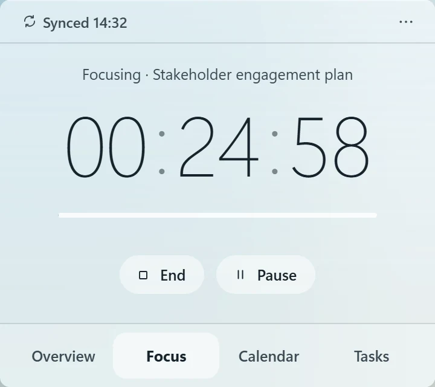
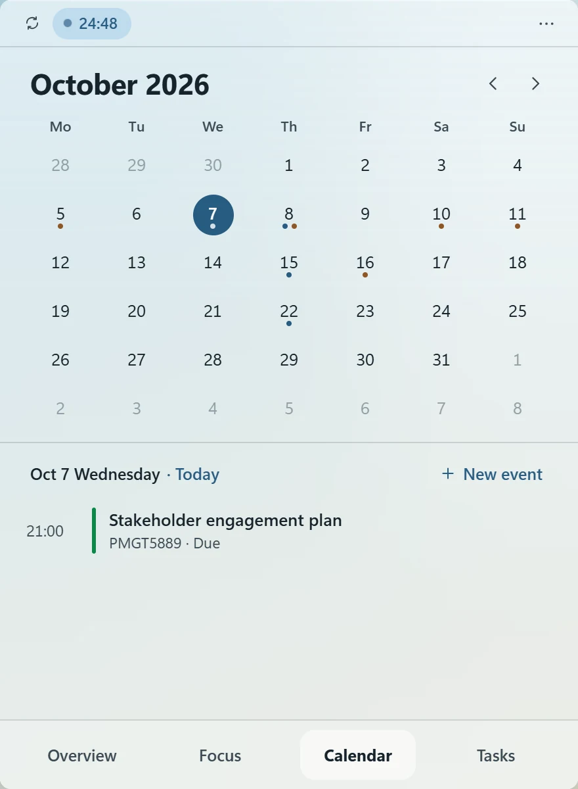
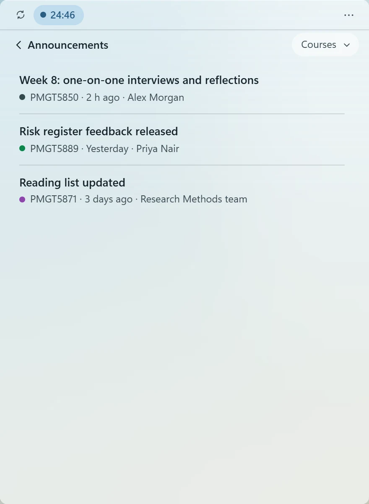
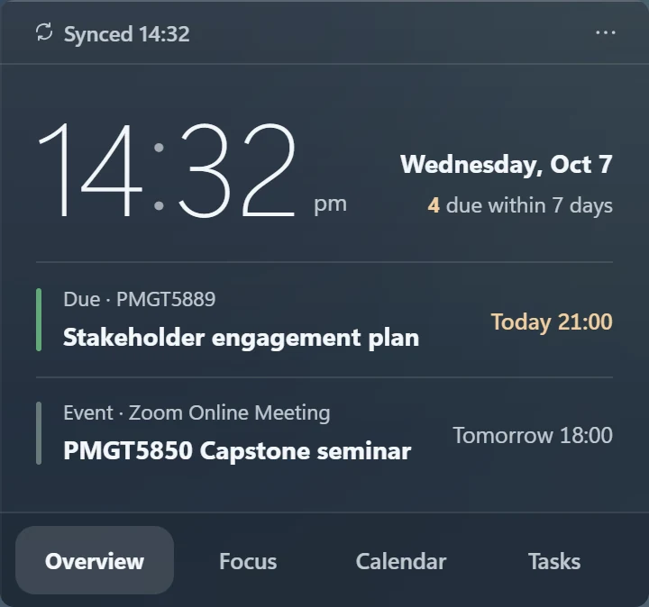
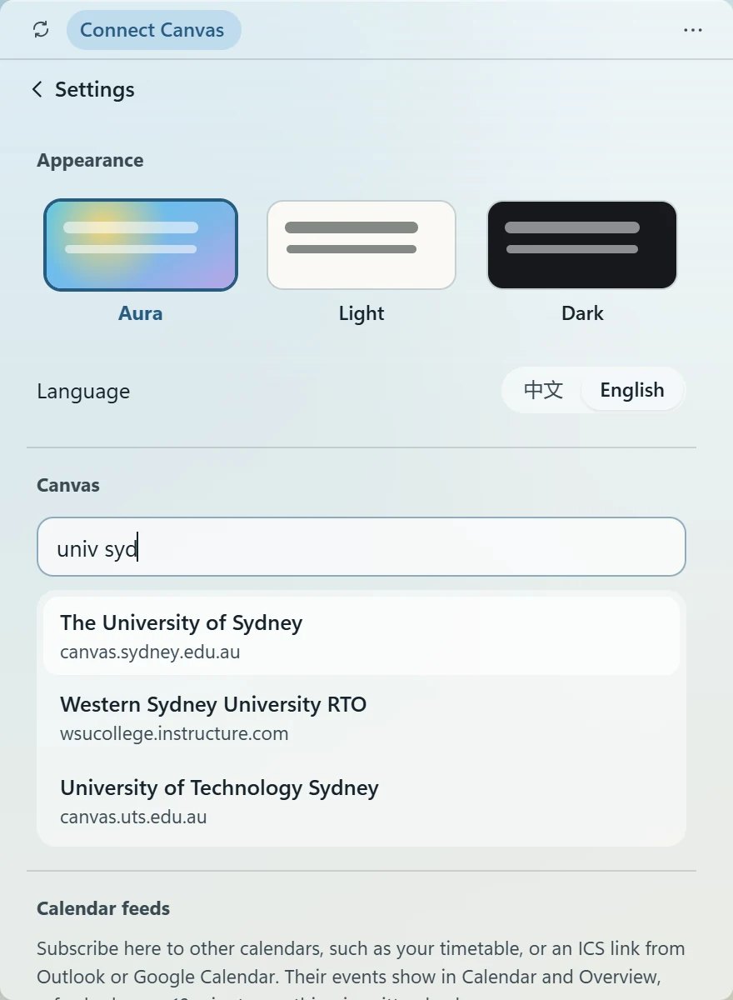
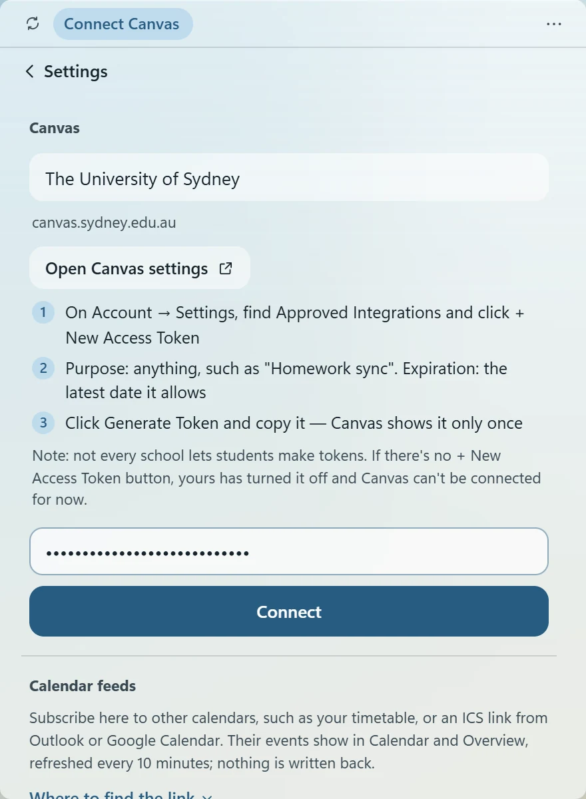

CANVAS DESKTOP WIDGET · FOR STUDENTS
Checking one assignment shouldn't mean opening a browser, signing in and waiting for a code on your phone. Still Today puts your Canvas assignments, due dates, course events and announcements on your Windows desktop.
Free · Open source · Mac version in beta
Still Today is a Windows app. Send the link to your computer, by email or a chat app, and download it there.
Assignments, due dates, course events and announcements sit on your desktop. One glance is enough, with no phone code to wait for.
It syncs with Canvas every 10 minutes. Submitted work ticks itself off, and new grades and announcements arrive as Windows notifications.
It reads Canvas with your own access token. No account, and no server in between.
FEATURES
TASKS
Assignments and quizzes are grouped into overdue, today, tomorrow and this week. Filter by course, search, or add tasks of your own.
Hand something in and the next sync ticks it off. If a due date moves, it moves here too, and grades show up right on the task.

FOCUS
Link the timer to an assignment and your focus time adds up on it. While a session runs, the time left stays in the top bar.

CALENDAR
The month view shows assignment due dates and Canvas course events, and you can add events of your own.
You can also subscribe to your timetable, Outlook or Google Calendar. Settings explains where to find each link.

ANNOUNCEMENTS & NOTIFICATIONS
Course announcements get a page of their own, with new ones marked. New grades and announcements each send a Windows notification.

APPEARANCE
The Aura theme blurs the wallpaper behind the widget and picks dark or light text to match. Light and dark themes are there too.
Moving between Overview, Tasks, Calendar and Focus, the widget smoothly changes shape.
INSTALL
It installs for your Windows account only, with no admin rights needed. If your browser says the file isn't commonly downloaded, choose Keep. Works on Windows 10 (1903 or later) and Windows 11.
When you see “Windows protected your PC”, click More info, then Run anyway. This is because the installer isn't code-signed yet.
Follow the four steps below, just once. After that it syncs every 10 minutes.

Click ··· at the top right → Settings, then type your school's name, such as univ syd.

Click Open Canvas settings, scroll down and click + New Access Token.

The purpose can be anything. Set the expiry to the latest date allowed, click Generate Token and copy it straight away.

Back in the widget, paste the token and click Connect. You'll be reminded before the token expires.
If your Canvas settings have no + New Access Token, your school doesn't let students create tokens, and Canvas can't be connected for now.
FAQ
Completely. The code is open source on GitHub under the MIT licence.
The token is kept in Windows Credential Manager on your PC, never in a file, and is sent only to your school's Canvas. Still Today has no accounts and no server in between. If you stop using it, delete the token in your Canvas settings and it stops working at once.
The installer isn't code-signed yet, so Windows SmartScreen doesn't recognise it. Click “More info”, then “Run anyway”. All the code is public on GitHub.
In Canvas, click your profile picture on the left → Settings, and scroll down to Approved Integrations. If it still isn't there, your school doesn't let students create tokens, and Canvas can't be connected for now.
The Mac version is in a small beta and will be released here when it's ready.
Only Canvas for now. If your school's system can export a calendar link (iCal / ICS), add it under Calendar feeds in Settings and the due dates will show on the calendar.
Tasks, focus history and settings are kept on your PC in %LOCALAPPDATA%\StillToday. Uninstalling doesn't delete them; reinstall and everything is as you left it.
v0.2.3 · 2.5 MB · Windows 10 / 11
Still Today is a Windows app. Download and install it on your computer.